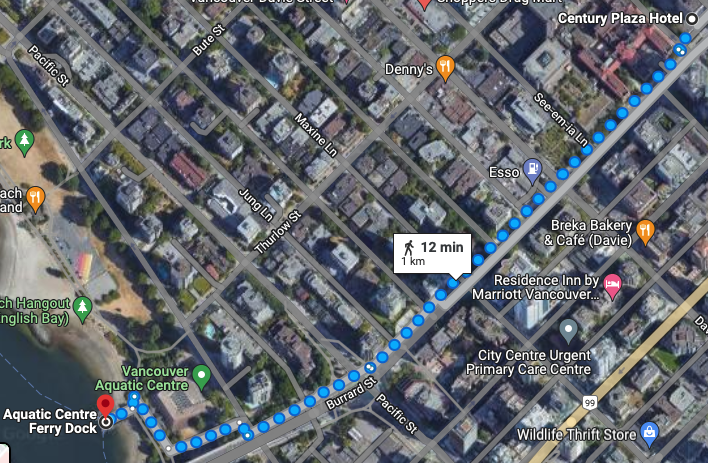

Day 2 (Saturday, July 2nd)
Morning
( - ) Ride False Creek ferries
( - ) Lunch at Ramen Butcher
Afternoon
( - ) Ride False Creek ferries
( - ) Vancouver Maritime Museum (one of the ferry docks)
( - ) Kitsilano Beach (can walk path from Maritime Museum)
Hotel to ferry dock (False Creek)
